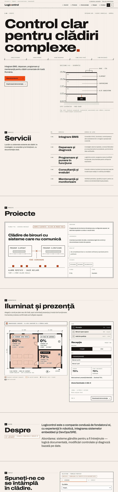
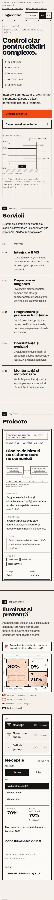

01 · Light


Signal
The site as a set of technical drawing sheets: a visible grid, numbered sheets, a building cross-section in the hero, services as a drawing schedule and the demo as a hatched floor plan with command and confirmation written on it.
- Type
- Archivo (wide, heavy) + IBM Plex Mono
- Colour
- Warm paper, near-black ink, signal orange #F04A14
- Fonts
- SIL OFL 1.1, self-hosted, 240 KB